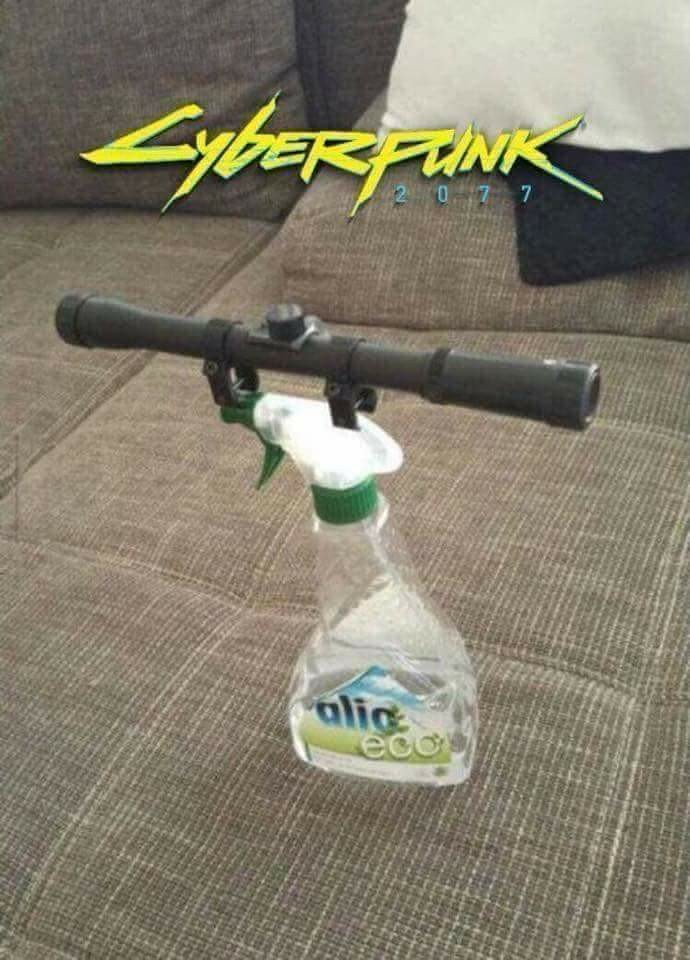

Scoped Shine Booster

Description
A technically advanced glass shiner with an attached
Vortex Optics Diamondback Tactical 6-24×50 FFP Riflescope. The precision is on
par with a N-Strike Elite. Aim and Pull the trigger , the dirt shall seek justice
Ingredients
- Surface cleaner spray
- Vortex Optics Diamondback Tactical 6-24×50 FFP Riflescope
- 1 cup vegetable oil
- 1 cup buttermilk
- Glue
- Duct tape
Steps
- Place the Vortex Optics Diamondback Tactical 6-24×50 FFP Riflescope on a firm surface.
- Gather the apparatus
- Rinse the pipette with the sodium carbonate solution and pipette out 20 ml of this solution in the titration flask.
- Glue the scope and the Surface cleaner
- Voila Scoped Shine Booster is locked and loaded
- Find a dirt , aim and shoot
GO BACK